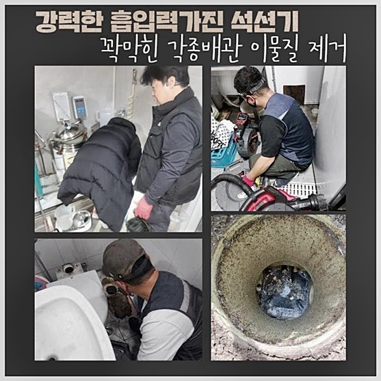
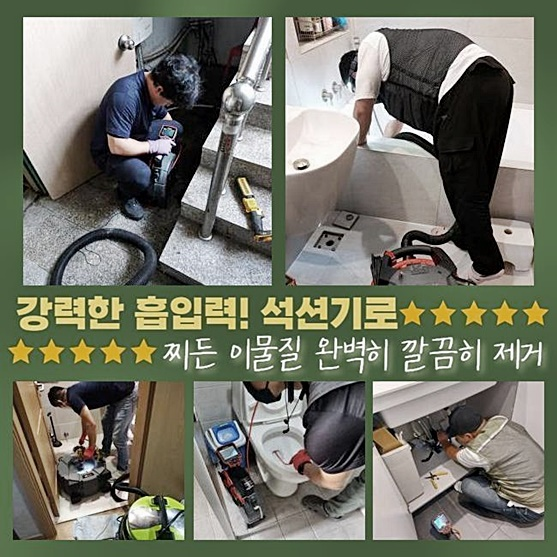
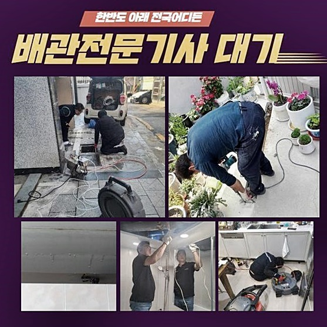
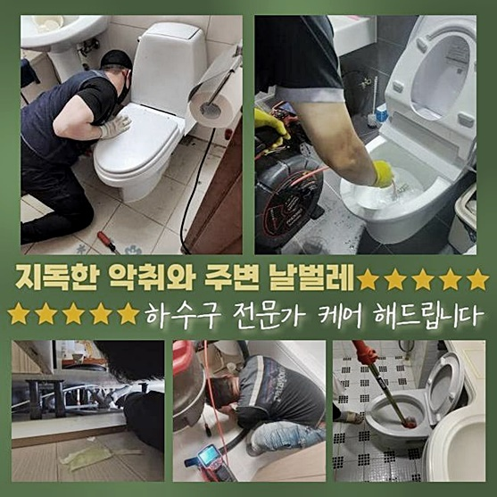
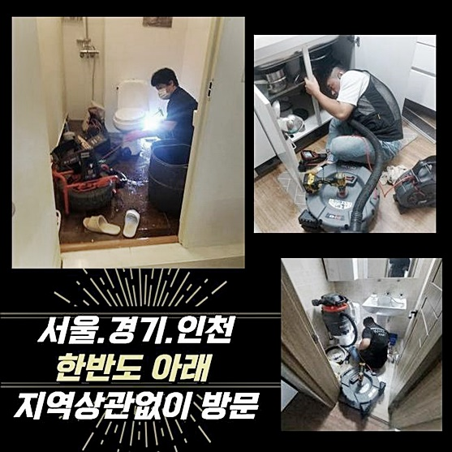

🏠 동두천 동두천동 하수구뚫음 탑동동 하수구뚫는비용 누수탐지
동두천 동두천동 하수구막힘 전문 시공 후기

📋 작업 개요
- 위치: 동두천 동두천동, 동두천동, 동두천
- 서비스 유형: 하수구막힘, 배관막힘, 누수수리, 역류해결, 뚫는업체, 고압세척, 배관보수
- 작업 일시: 2024. 10. 3. 9:38
- 업체명: 하수구수사대 (010-5615-2118)
🔍 문제 상황
동두천 동두천동 하수구뚫음 탑동동 하수구뚫는비용 누수탐지
하수구 관련한 이상 현상 중에는 하수가 빠져나가는 시간이 저속으로 변하거나 내부 잔수가 윗쪽으로 범람하는 증상이 자주 목격되곤 합니다
이러한 현상이 생기면 구조물에 오염요소가 가득 차올랐단 것을 알려주는데 이를 간과한다면 완전 봉쇄까지 이를 수 있어요
앞서 방문드려서 마주했었던 고장난 하수구로 연락주신 사례에서도 의뢰인분이 평상시랑 다른 점을 느끼시고 상담 요청을 하셨습니다
현장을 두루 살펴보고 저희는 가장 효율적인 해결책을 앞세워서 미흡한 면을 보충했습니다
답답한 하수구 장애를 명쾌하게 고쳐드리려고 우선 하수구를 검토하고 가득 적체된 이물질을 물색하게 없애줬습니다
물의 이동경로를 모두 치우고 만족을 끌어냈는지 보기위해 이곳저곳을 체크해서 혹시나 놓친 점이 체류하는지 신중히 점검하였습니다
정상적인 하수구가 끊기는 것은 대형 건물이나 소형 빌라 등 다양한 양식의 장소에서 일어날 수 있는 일입니다
설비 관련한 경험 및 지식과 스킬을 갖추고 있어야만 완성도 높은 수준으로 리페어를 할 수 있고 재발도 막을 수 있습니다
번거로운 반복을 막고 싶다면 고객님 선에서의 행동 보다는 전문가에게 얼른 수선을 맡기시는 게 좋아요
현장에 진입하고 나서 대강 상황을 살펴보니 바닥타일에 역류되어 버린 오염 잔해가 퍼뜨려진 모습이었고 구린내도 진동을 했습니다

🔎 원인 분석
💡 전문가 진단: 정밀 진단 장비를 사용하여 슬러지의 고착 여부를 판명하고 타격/세척 작업을 실시했습니다.
물을 천천히 틀어보았더니 수돗물이 한참 뒤에야 서서히 빠지는 현상을 눈앞에서 확인했고 잘 작동하다가 갑작스레 물이 느릿한 양상을 띤다고 하셨어요
물을 꽤 쓰고나면 쓴 물이 방출되지 않고 누적되며 더럽혀진 잔수가 관로를 상승해서 나왔다고 하셨어요
안에 머무르는 오물들은 물을 받아서 버리더라도 수월하게 뚫리지 않는 상황이 많은데 다년간 쌓이면 압축되어 고체화됩니다
다소 심한 배관 문제같다면 전문가의 정밀 진단을 통해서 문제를 극복하는 게 이상적이라고 하겠습니다
상가 속의 화장실이 막혀버렸기에 건물 내 상인들이 손을 씻는 단순한 일도 해결할 수 없어서 건물 안의 세입자들이 피해가 막심하다며 현재 어려움을 알려주셨네요
수많은 이용자가 찾아오는 환경이라면 더욱이 위급한 사안으로 평가합니다
하수구가 겪는 에러는 다수의 요소에 의해서 발현될 수 있기 때문에 장애의 동기의 전체를 찾는 게 무엇보다 핵심입니다
데이터를 얻기 위해서 저희의 검사 장비들을 총동원해서 세부 내역을 살펴보았는데 바닥의 배관 근처에 트러블이 존재한다고 판단했어요
물이 나가는 정상경로의 어딘가가 마비됐단 걸 알았으니 즉각 뚫음 업무를 하여 잘못된 에러를 수리했어요
전문공이 찾아가서 담당해드리면 얼른 수선을 해드리는 것이 가능하므로 악취같은 추가적 이슈로부터 빠르게 빠져나가도록 도와드립니다
내측에 집적된 오물의 덩어리는 장기간 머무르면 썩으면서 굉장한 냄새가 주변에 진동하게 돼요
보편적으로 하수관의 안은 칙칙하기도 하지만 매우 고온다습한 조건이므로 세균 번식도 활발합니다

🔧 작업 과정
하수구 관련한 트러블들은 전문공을 최대한 빨리 불러서야 단 일분일초라도 빠르게 불쾌함이나 불편함같은 부정적 감정을 감축할 수 있는 것입니다
혼자서 처리하겠다고 나서면 한동안은 물이 잘 빠지고 좋아지는 모습이더라도 금방 재막힘이 생길 것입니다
계속 별의 별 수단을 다 쓴다면 배관 벽에 자극을 주거나 노화를 형성하고 맙니다
작업장을 다각도로 관찰하고 효과가 좋을 것으로 사료되는 장비 종류를 골라잡고 세척 단계에 들어섭니다
그중에서 샤프트 장비는 호스 끝에 붙은 노즐이 고속으로 진동하면서 파이프 안의 침전된 딱딱한 물질을 미세한 조각으로 잘라냅니다
이 기기의 힘으로 슬러지와 물때를 씻어내리는 과정이 시행되었는데 윗부분부터 서서히 내려가며 전체 이물질이 남김 없이 척결됐어요
강도가 상당하다 싶은 슬러지가 고착화된 깊이에서는 더욱 레벨을 높여서 산산조각을 내버렸어요
집념있는 제거 과정으로 무해한 환경으로 복구됐고 시스템의 원만한 작동이 나타나게 됐습니다
노폐물의 타입이나 얼마나 오래됐는지에 따라서 작업 방향을 창의적으로 바꿔주는 센스가 필요합니다
배관의 겉과 속에 대한 검사를 철두철미하게 해뒀기에 전체적인 오염원을 완전히 정화를 시켜드린 부분이 만족스럽다고 느꼈어요
깊은 내부에 고여있는 슬러지덩어리가 배관을 막고 있었음을 확인했기에 냄새까지도 완전히 잡을 수 있었습니다
한 섹션만 고친 이후에 황급히 마무리 지으면 악취는 고스란히 남고 잦은 막힘까지도 무한으로 생성될 위험이 있으니 처음부터 좋은 시공자를 찾아야 해요
지식이 부실한 사람이 맡으면 문제의 배경 분석이 어렵겠지만 저희 업체는 풍부한 경험을 쌓아온 실무 전문가로 이뤄져서 확실히 다릅니다
해결이 까마득한 현장을 마주하는 상황 속에서도 다수의 노하우를 기반으로 처리해 드리고 있사오니 얼마든지 맡겨주셔도 됩니다
대형 장비에 이르기까지 모조리 현장에 챙겨가고 있으며 초심을 잃지 않고 세심한 접근법으로 완전 개선에 이르기까지 시공을 끈기있게 끌고갑니다
단순막힘 사안을 무시하다가 처리가 어려울듯한 측면까지 확장된 다음에야 서둘러 맡겨주시는 케이스가 생각보다 많아요
쉽게 극복할 수 있는 현장이라도 차일피일 미루면 난이도가 상승해서 자원이나 시간 문제도 감당하기 힘들어질 수 있어요
최대한 조속히 접수하시면 금방 개선 결과를 얻게 되며 정상 작동이 되는 컨디션을 얻게 되신다는 점을 항상 기억해 두세요!
많은 사용자가 존재하는 건축물에서 일어나는 하수구 고장이면 피해자도 많기 때문에 즉시 조치가 필요하다 봅니다


✅ 작업 완료
하수관의 생김새나 속성에 따라 제일 괜찮겠다 싶은 방법으로 이어가니 시설물 파손 방지까지 지켜갈 수 있겠죠
어떤 문제가 발생했느냐에 따라서 고객 맞춤 서비스를 실시하고 의뢰인분의 못마땅하는 느낌을 아예 만들지 않기 위하여 즉각적인 처리를 항시 지키려고 노력합니다
하수도를 멀리에서 관찰하는 것만으로는 하수관이 품고있는 에러를 전반적으로 알 수는 없어요
이 제약을 다수의 경험과 기계의 능력이 접목되어야 완벽 보수가 가능해 집니다
저희를 믿고 맡겨주시면 통쾌하게 물이 이동하는 하수구 시설로 다시 만들어드릴게요!



⚠️ 베란다 누수 및 방수 관리 방법
- ✅ 비가 많이 올 때 창틀 주변이나 아래층 천장에 얼룩이 생기는지 정기적으로 확인해 보세요.
- ✅ 우수관 주변 실리콘 마감이 들뜨거나 깨진 틈새가 있는지 손상 여부를 수시로 체크하세요.
- ✅ 베란다 바닥 타일의 줄눈(메지)이 소실되면 그 틈으로 물이 침투하여 누수가 유발됩니다.
- ✅ 누수 의심 증상 발견 시 방치하면 아래층 손실이 커지므로 즉시 전문가의 진단을 받으십시오.
💡 핵심 정리
- 확실한 장비 작업(내시경 점검 및 샤프트 스케일링)으로 원인을 뿌리 뽑습니다.
- 작업 후 1년 이내에 동일한 부위 재발 시 100% 무상 A/S 서비스를 보장합니다.
- 서울 · 경기 · 인천 전 지역에 24시간 언제든 긴급 출동할 수 있도록 항시 대기 중입니다.
❓ 자주 묻는 질문 (FAQ)
🚨 동두천 동두천동 하수구막힘 문제로 고민이신가요?
정확한 원인 진단과 확실한 시공으로 재발 없는 해결을 약속드립니다.
24시간 긴급 출동 | 서울 · 경기 · 인천 전지역 | 1년 내 재발 시 무상 A/S